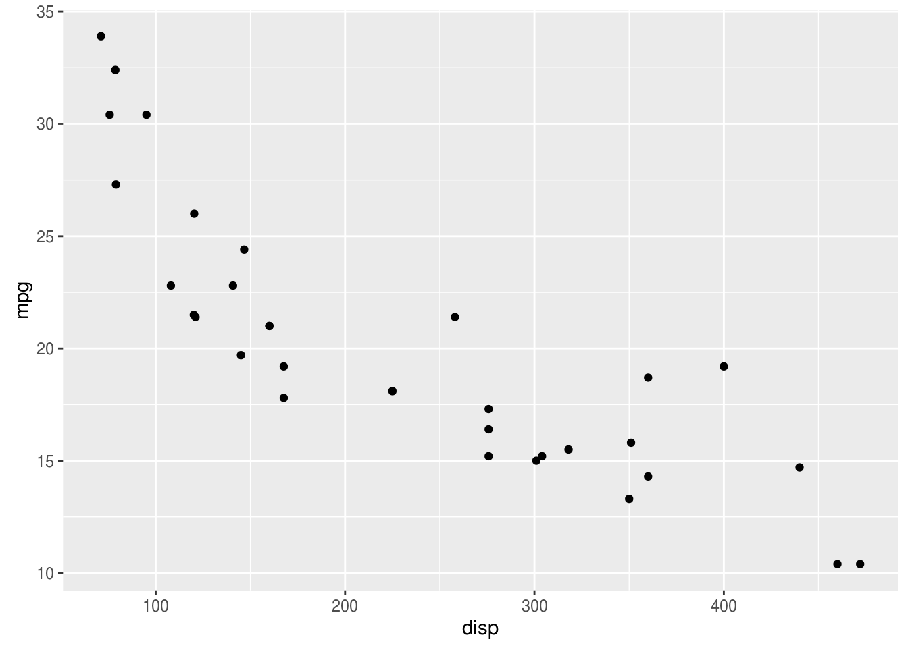
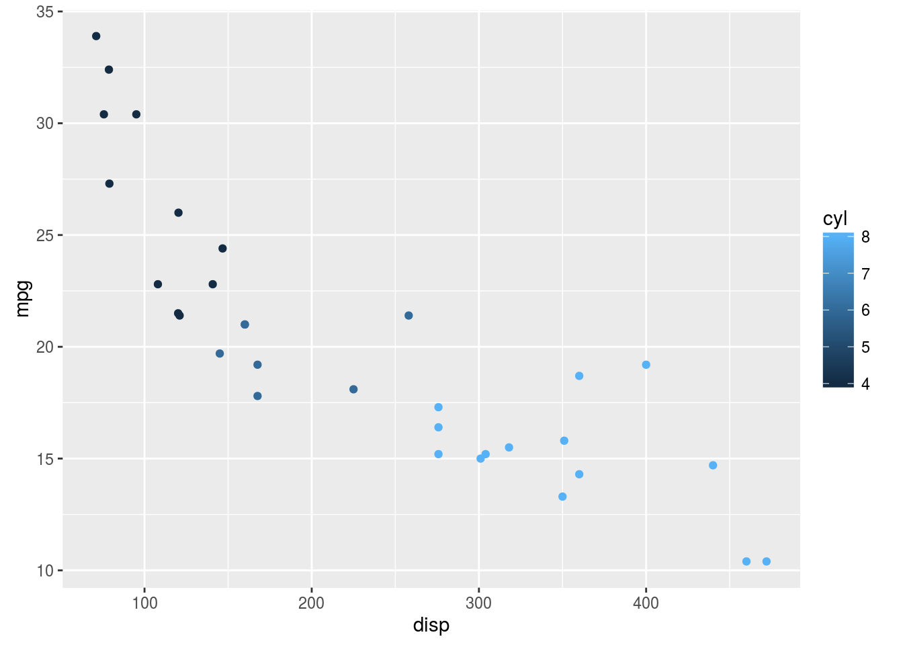
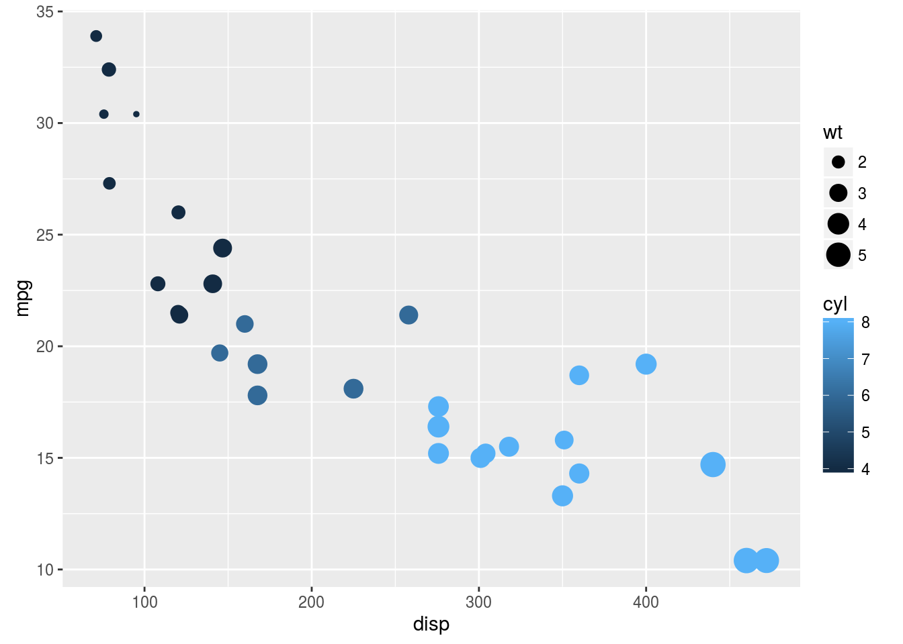
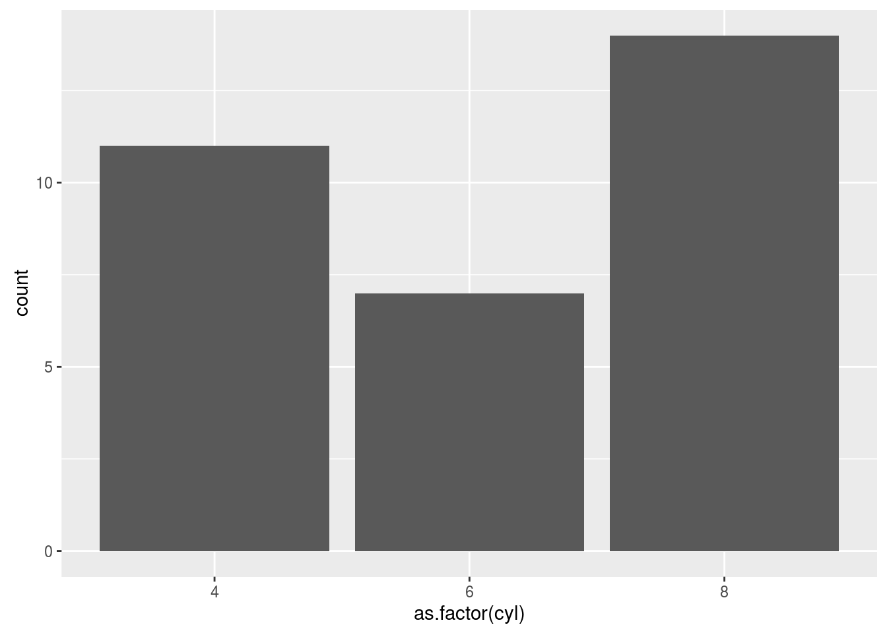
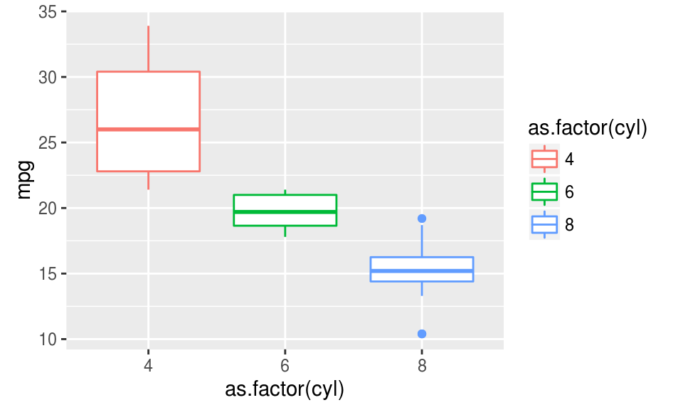
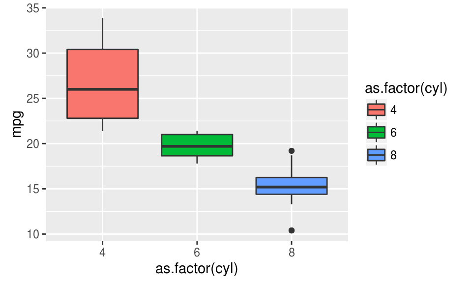
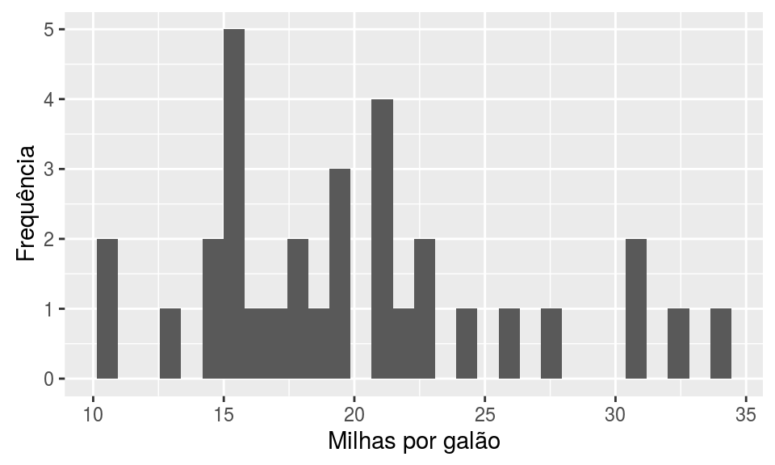
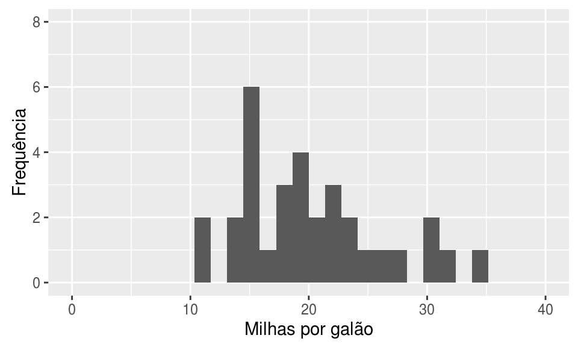
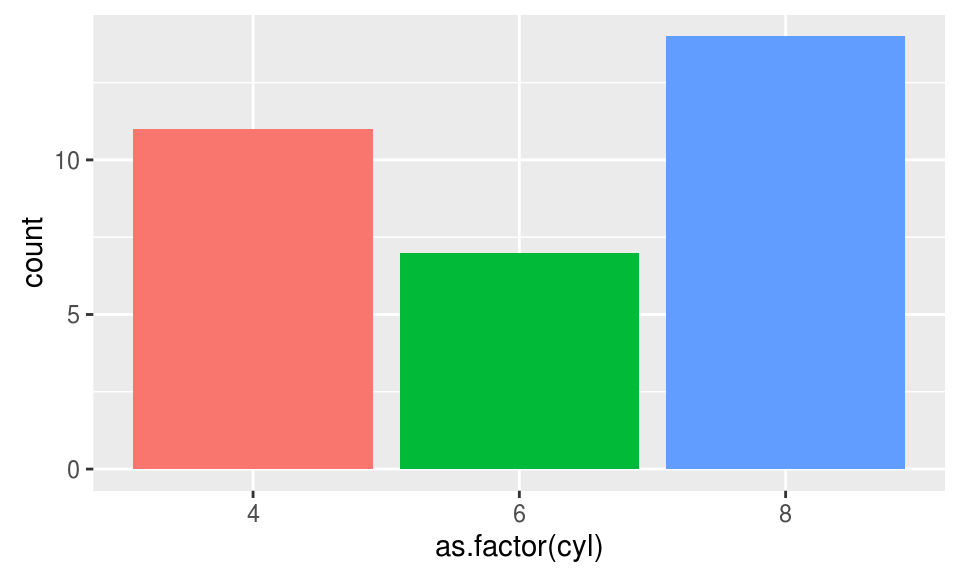
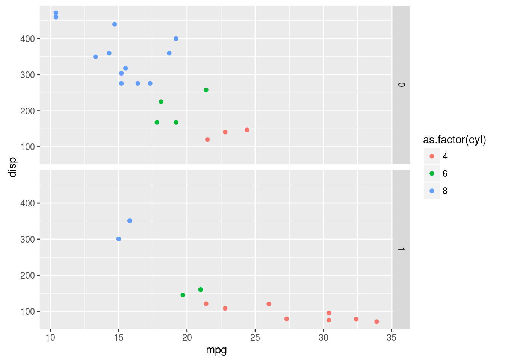

2.11 Construindo gráficos
A seguir, vamos discutir os aspcetos básicos para a construção de gráficos com o pacote gglplot2. Para isso, utilizaremos o banco de dados contido no objeto mtcars. Para visualizar as primeiras linhas deste banco, utilize o comando:
head(mtcars)## mpg cyl disp hp drat wt qsec vs am gear carb
## Mazda RX4 21.0 6 160 110 3.90 2.620 16.46 0 1 4 4
## Mazda RX4 Wag 21.0 6 160 110 3.90 2.875 17.02 0 1 4 4
## Datsun 710 22.8 4 108 93 3.85 2.320 18.61 1 1 4 1
## Hornet 4 Drive 21.4 6 258 110 3.08 3.215 19.44 1 0 3 1
## Hornet Sportabout 18.7 8 360 175 3.15 3.440 17.02 0 0 3 2
## Valiant 18.1 6 225 105 2.76 3.460 20.22 1 0 3 12.11.1 As camadas de um gráfico
No ggplot2, os gráficos são construídos camada por camada (ou, layers, em inglês), sendo que a primeira delas é dada pela função ggplot (não tem o “2”). Cada camada representa um tipo de mapeamento ou personalização do gráfico. O código abaixo é um exemplo de um gráfico bem simples, construído a partir das duas principais camadas.
ggplot(data = mtcars, aes(x = disp, y = mpg)) +
geom_point()
Observe que o primeiro argumento da função ggplot é um data frame. A função aes() descreve como as variáveis são mapeadas em aspectos visuais de formas geométricas definidas pelos geoms. Aqui, essas formas geométricas são pontos, selecionados pela função geom_point(), gerando, assim, um gráfico de dispersão. A combinação dessas duas camadas define o tipo de gráfico que você deseja construir.
2.11.1.1 Aesthetics
A primeira camada de um gráfico deve indicar a relação entre os dados e cada aspecto visual do gráfico, como qual variável será representada no eixo x, qual será representada no eixo y, a cor e o tamanho dos componentes geométricos etc. Os aspectos que podem ou devem ser mapeados depende do tipo de gráfico que você deseja fazer.
No exemplo acima, atribuímos aspectos de posição: ao eixo y mapeamos a variável mpg (milhas por galão) e ao eixo x a variável disp (cilindradas). Outro aspecto que pode ser mapeado nesse gráfico é a cor dos pontos
ggplot(data = mtcars, aes(x = disp, y = mpg, colour = as.factor(am))) +
geom_point()
Agora, a variável am (tipo de transmissão) foi mapeada à cor dos pontos, sendo que pontos vermelhos correspondem à transmissão automática (valor 0) e pontos azuis à transmissão manual (valor 1). Observe que inserimos a variável am como um fator, pois temos interesse apenas nos valores “0” e “1”. No entanto, tambem podemos mapear uma variável contínua à cor dos pontos:
ggplot(mtcars, aes(x = disp, y = mpg, colour = cyl)) +
geom_point()
Aqui, o número de cilindros, cyl, é representado pela tonalidade da cor azul.
Nota: por default, a legenda é insirida no gráfico automaticamente.
Também podemos mapear o tamanho dos pontos à uma variável de interesse:
ggplot(mtcars, aes(x = disp, y = mpg, colour = cyl, size = wt)) +
geom_point()
Exercício: pesquisar mais aspectos que podem ser alterados no gráfico de dispersão.
2.11.1.2 Geoms
Os geoms definem qual forma geométrica será utilizada para a visualização dos dados no gráfico. Como já vimos, a função geom_point() gera gráficos de dispersão transformando pares (x,y) em pontos. Veja a seguir outros geoms bastante utilizados:
- geom_line: para retas definidas por pares (x,y)
- geom_abline: para retas definidas por um intercepto e uma inclinação
- geom_hline: para retas horizontais
- geom_boxplot: para boxplots
- geom_histogram: para histogramas
- geom_density: para densidades
- geom_area: para áreas
- geom_bar: para barras
Veja a seguir como é fácil gerar diversos gráficos diferentes utilizando a mesma estrutura do gráfico de dispersão acima:
ggplot(mtcars, aes(x = as.factor(cyl), y = mpg)) +
geom_boxplot()
ggplot(mtcars, aes(x = mpg)) +
geom_histogram()## `stat_bin()` using `bins = 30`. Pick better value with `binwidth`.
ggplot(mtcars, aes(x = as.factor(cyl))) +
geom_bar()
Para fazer um boxplot para cada grupo, precisamos passar para o aspecto x do gráfico uma variável do tipo fator.
2.11.2 Personalizando os gráficos
2.11.2.1 Cores
O aspecto colour do boxplot, muda a cor do contorno. Para mudar o preenchimento, basta usar o fill.
ggplot(mtcars, aes(x = as.factor(cyl), y = mpg, colour = as.factor(cyl))) +
geom_boxplot()
ggplot(mtcars, aes(x = as.factor(cyl), y = mpg, fill = as.factor(cyl))) + geom_boxplot()
Você pode também mudar a cor dos objetos sem mapeá-la a uma variável. Para isso, observe que os aspectos colour e fill são especificados fora do aes().
ggplot(mtcars, aes(x = as.factor(cyl), y = mpg)) +
geom_boxplot(color = "red", fill = "pink")
2.11.2.2 Eixos
Para alterar os labels dos eixos acrescentamos as funções xlab() ou ylab().
ggplot(mtcars, aes(x = mpg)) +
geom_histogram() +
xlab("Milhas por galão") +
ylab("Frequência")## `stat_bin()` using `bins = 30`. Pick better value with `binwidth`.
Para alterar os limites dos gráficos usamos as funções xlim() e ylim().
ggplot(mtcars, aes(x = mpg)) +
geom_histogram() +
xlab("Milhas por galão") +
ylab("Frequência") +
xlim(c(0, 40)) +
ylim(c(0,8))## `stat_bin()` using `bins = 30`. Pick better value with `binwidth`.
2.11.2.3 Legendas
A legenda de um gráfico pode ser facilmente personalizada.
Para trocar o label da leganda:
ggplot(mtcars, aes(x = as.factor(cyl), fill = as.factor(cyl))) +
geom_bar() +
labs(fill = "cyl")
Para trocar a posição da legenda:
ggplot(mtcars, aes(x = as.factor(cyl), fill = as.factor(cyl))) +
geom_bar() +
labs(fill = "cyl") +
theme(legend.position="top")
Para retirar a legenda:
ggplot(mtcars, aes(x = as.factor(cyl), fill = as.factor(cyl))) +
geom_bar() +
guides(fill=FALSE)
Veja mais opções de personalização aqui!
2.11.2.4 Facets
Outra funcionalidade muito importante do ggplot é o uso de facets.
ggplot(mtcars, aes(x = mpg, y = disp, colour = as.factor(cyl))) +
geom_point() +
facet_grid(am~.)
Podemos colocar os graficos lado a lado também:
ggplot(mtcars, aes(x = mpg, y = disp, colour = as.factor(cyl))) +
geom_point() +
facet_grid(.~am)